A Grade 7 mathematics class where students first write down what they think, test it with 3D tools, and change their minds with evidence — supported by an AI-enabled classroom platform built by the teacher.학생이 먼저 자기 생각을 기록하고, 3D 도구로 직접 확인하며, 근거를 가지고 생각을 바꾸는 중학교 1학년 수학 수업입니다. 수업을 돕는 AI 기반 수업 시스템은 담당 교사가 직접 만들었습니다.
"Find the hidden clue, then design your own solid of revolution." Every student works on a laptop; the teacher leads the class page by page.「숨은 단서를 찾고 나만의 회전체 만들기」. 학생은 노트북으로 활동하고, 교사는 쪽 단위로 수업 흐름을 이끕니다.
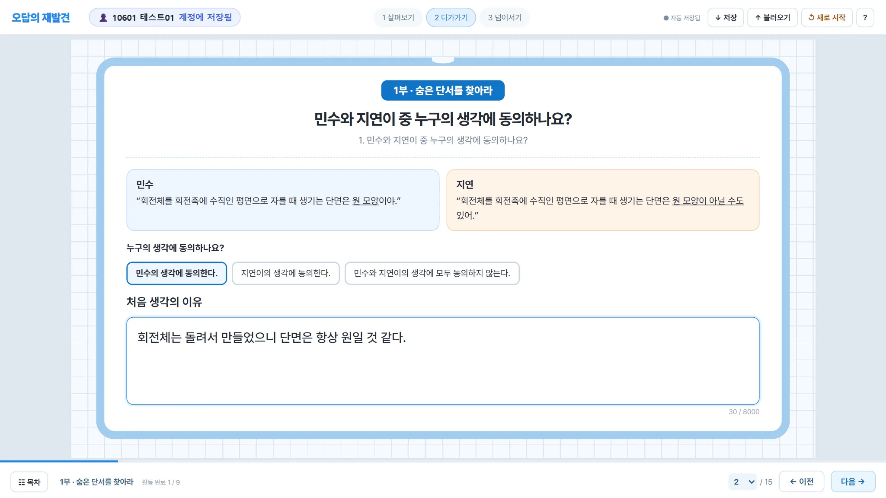
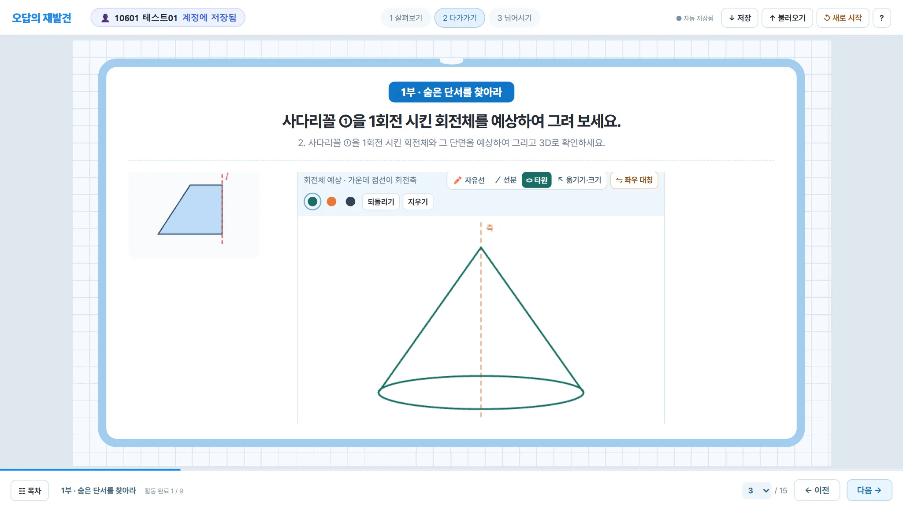
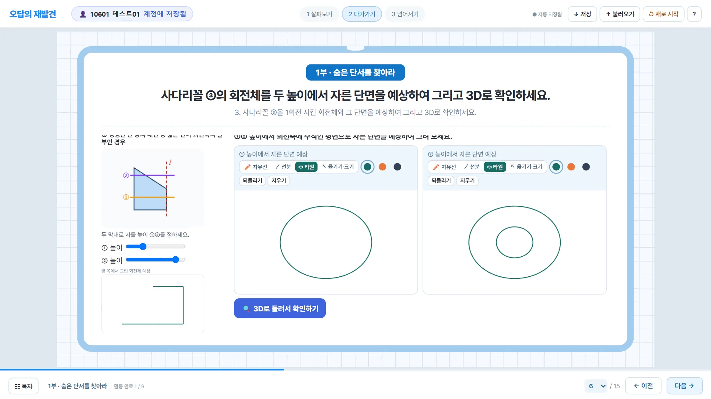
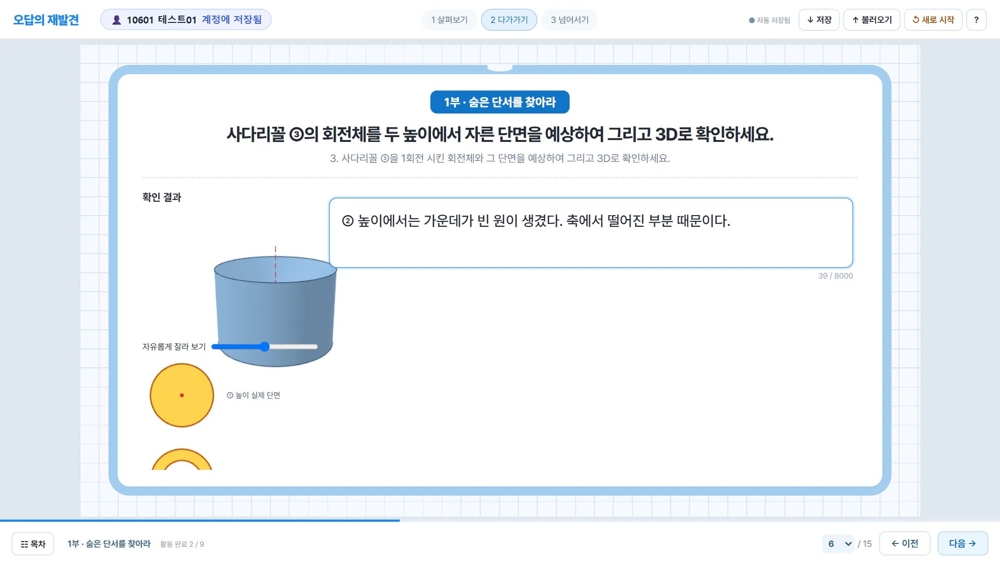
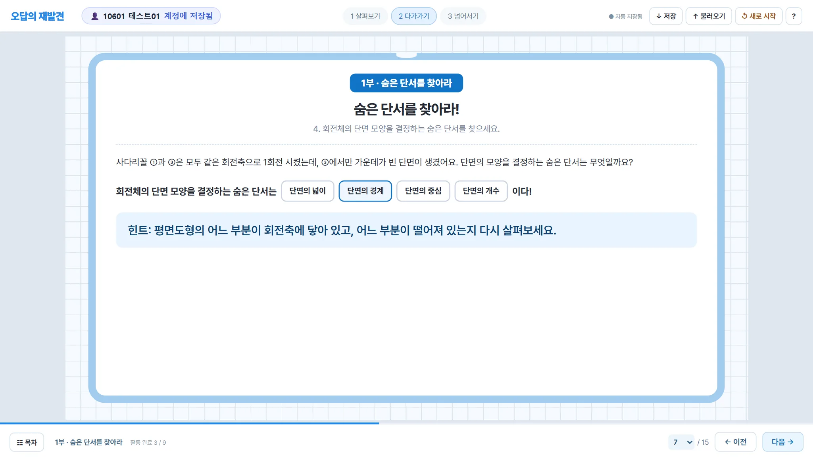
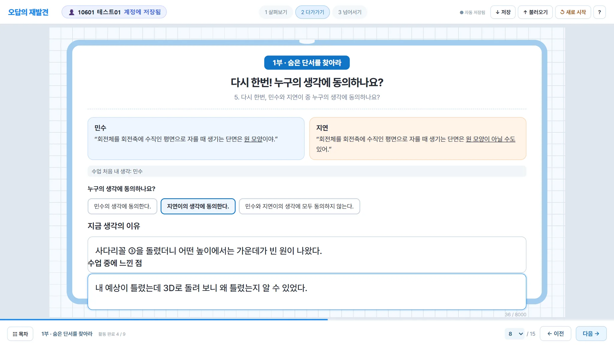
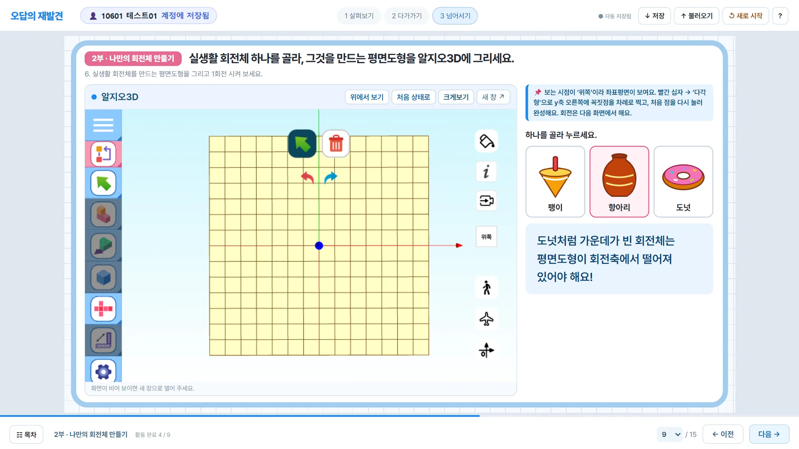
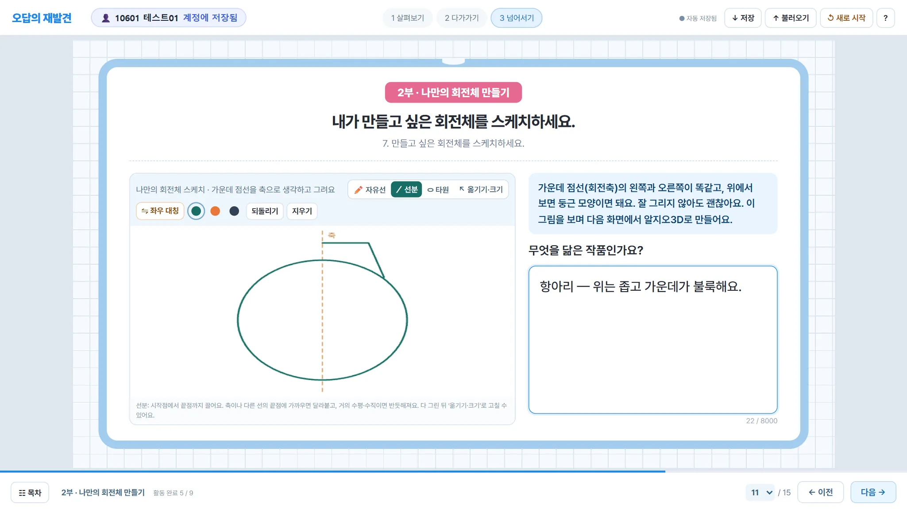
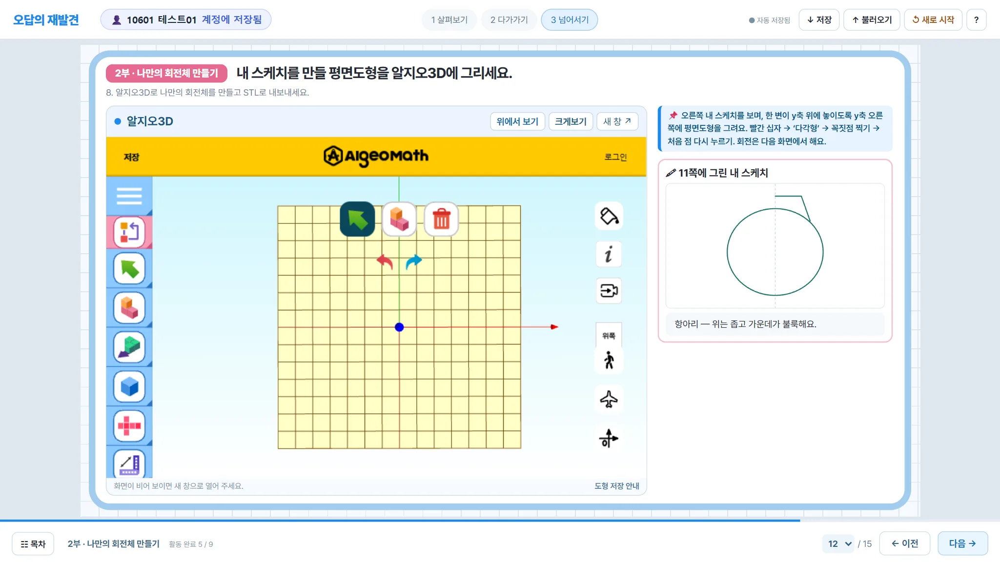
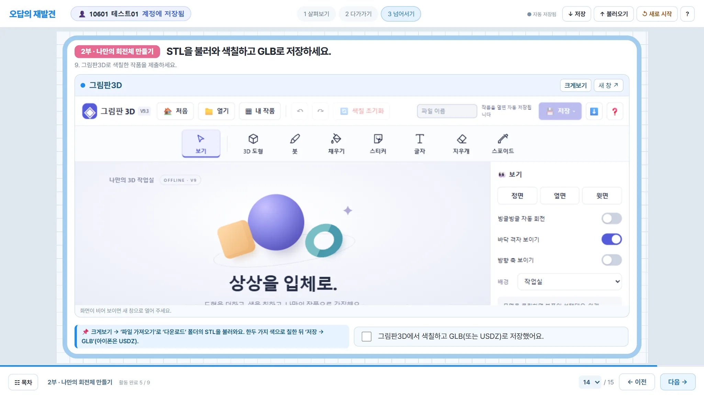
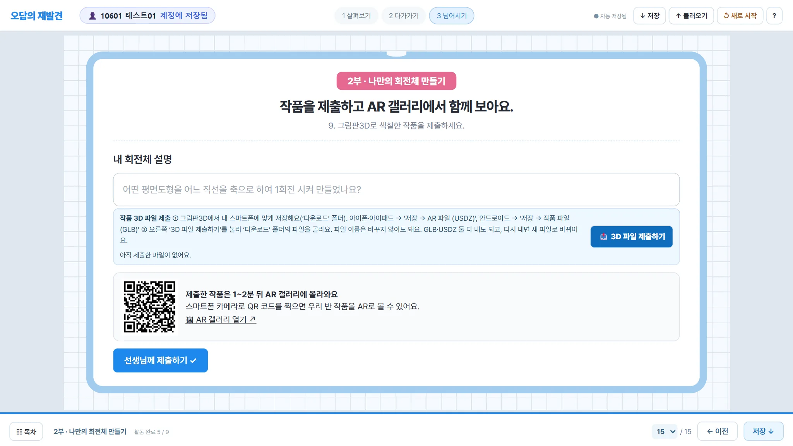
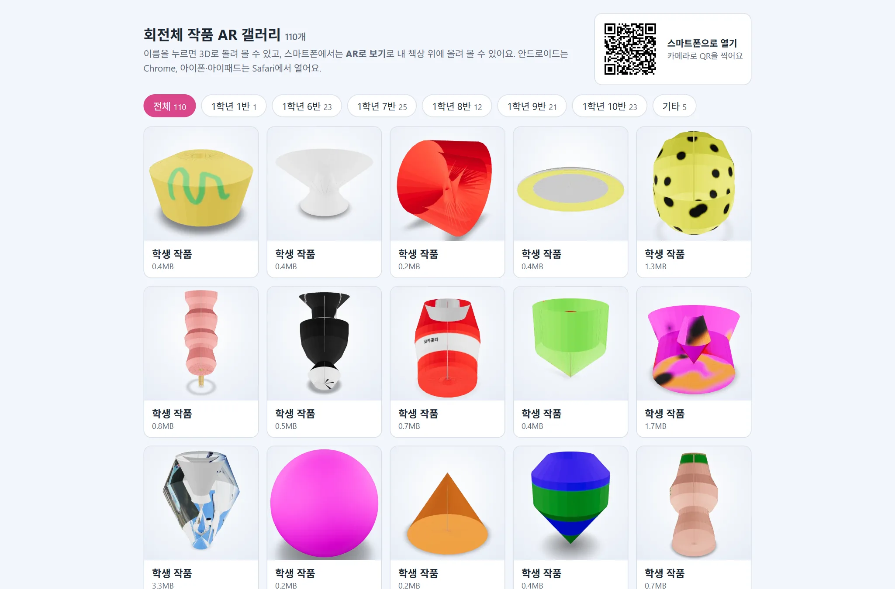
Screenshots were taken on a test server with sample accounts (Test01–03); no real student data is shown.화면은 시험 서버에서 가짜 계정(테스트01~03)으로 찍었습니다. 실제 학생 정보는 없습니다.
A national pilot run with the Korea Foundation for the Advancement of Science and Creativity (KOFAC) and the Incheon Metropolitan Office of Education. Guwol Middle School is a pilot school (Grade 7, regular math lessons in all 10 classes).한국과학창의재단·인천광역시교육청 운영학교 사업입니다. 구월중학교는 1학년 10개 반 정규 수학 수업에서 운영합니다.
Answer + reason + confidence (1–4) before any feedback.답 + 이유 + 확신도(1~4)를 먼저 남깁니다.
Each wrong option is linked to a known misconception; a confident wrong answer counts as evidence.틀린 보기마다 오개념이 연결되어 있고, 자신 있게 틀린 답을 증거로 셉니다.
The class map of misconceptions shapes the next lesson: counter-examples, 3D checks.반 전체 오개념 지도를 보고 다음 수업의 반례·3D 확인 활동을 고릅니다.
Students revisit the same question and explain what changed (3-Step reflection).같은 질문을 다시 풀고 무엇이 바뀌었는지 설명합니다(3-Step 회고).
One website for students and teachers, running on Google Firebase. Students sign in with their school Google account; every record stays connected to the same student across lessons.학생·교사가 함께 쓰는 하나의 웹사이트(구글 Firebase). 학생은 학교 구글 계정으로 로그인하고, 모든 기록이 한 학생 이름으로 이어집니다.
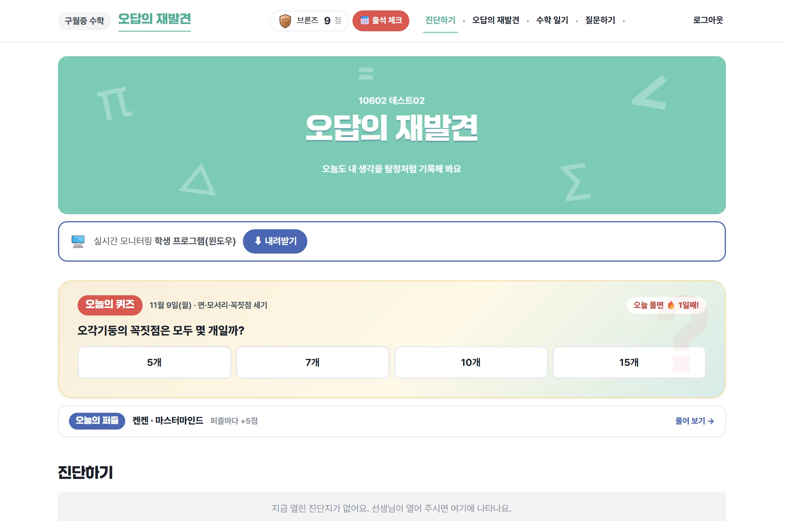
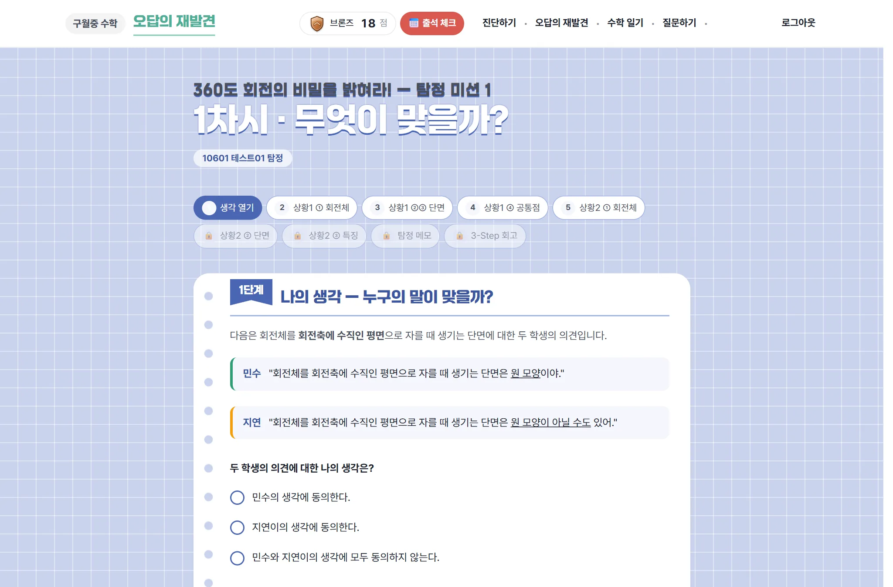
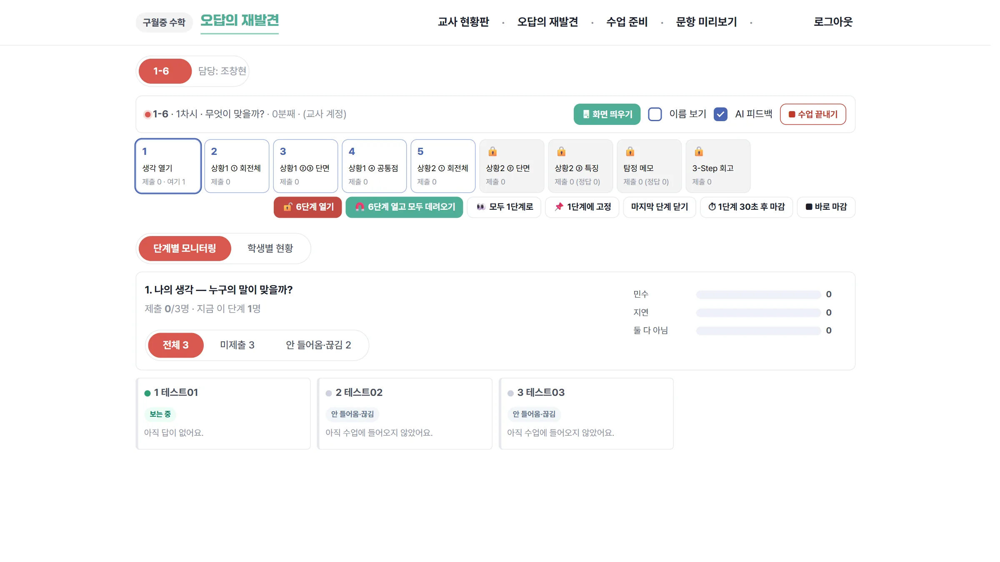
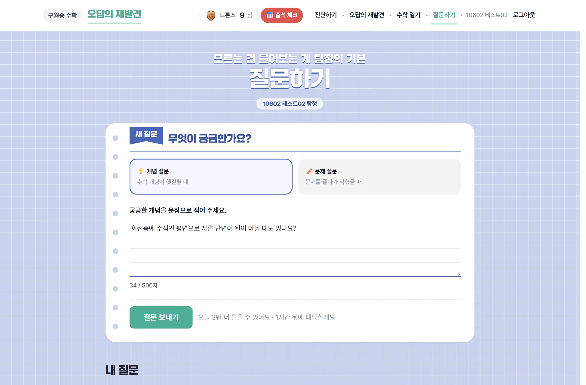
Small daily routines keep students coming back to mathematics between lessons. Every routine feeds the same student record, so the teacher sees one connected picture of each learner.수업과 수업 사이에도 학생이 수학으로 돌아오게 하는 작은 일과들입니다. 모든 활동이 한 학생의 기록으로 이어져, 교사는 학생 한 명 한 명을 하나로 이어진 그림으로 봅니다.
Before the unit, a 10-minute check on the elementary-school ideas it builds on (prisms and pyramids, cylinders, cones and spheres, nets). Short sets let students fill gaps one topic at a time; answers come with a reason and confidence (1–4).단원을 시작하기 전, 바탕이 되는 초등 내용(각기둥·각뿔, 원기둥·원뿔·구, 전개도)을 10분 안에 확인합니다. 주제별 짧은 묶음으로 빈 곳을 하나씩 메우고, 답마다 이유와 확신도(1~4)를 남깁니다.
One tap a day on the home screen. A stamp calendar shows the month, and every 5-day streak earns a bonus (weekends do not break a streak).첫 화면에서 하루 한 번 누릅니다. 출석 달력에 도장이 찍히고, 5일 연속마다 보너스가 붙습니다(주말은 연속을 끊지 않음).
Total points place each student in a game-style tier with its own emblem, plus 11 badges and a class Top 5.누적 포인트로 게임식 티어가 정해지고, 티어마다 엠블럼이 있습니다. 배지 11종과 우리 반 TOP 5도 함께 보입니다.
Students spend points on a snack voucher. The teacher sets the item and price, hands out the snack, and confirms it in the app; every exchange is logged. Spending points never lowers a student's tier.모은 포인트로 간식 교환을 신청합니다. 교사가 품목·가격을 정하고, 간식을 준 뒤 앱에서 확인하면 기록이 남습니다. 포인트를 써도 티어는 내려가지 않습니다(누적 기준).
A calendar linked to the school timetable (NEIS) shows each math lesson. Students rate the lesson and write four short parts: what they learned, what they did, how they felt and what they will try next. The teacher writes back.학교 시간표(나이스)와 연결된 달력에 수학 시간이 표시됩니다. 학생은 별점과 함께 배운 내용·나의 활동·느낀 점·앞으로를 쓰고, 교사가 답장합니다.
Concept or problem questions at any time, with a photo of the problem if needed. The AI replies with hints rather than final answers, and the teacher can add a reply.언제든 개념 질문·문제 질문을 올립니다(문제 사진 가능). AI는 최종 답 대신 실마리를 주고, 교사도 답글을 달 수 있습니다.
A wrong answer earns exactly the same as a right one, so students are not afraid to write down what they really think. Points are calculated on the server from existing records; students cannot edit them. The teacher can add praise points with a reason.오답도 정답과 똑같이 점수를 받으므로, 학생은 틀릴 걱정 없이 진짜 생각을 적습니다. 포인트는 서버가 기존 기록으로 계산해 학생이 고칠 수 없고, 교사는 이유를 붙여 칭찬 포인트를 줄 수 있습니다.
| Activity활동 | Points포인트 |
|---|---|
| Daily attendance check출석 체크(하루 한 번) | 5 |
| Every 5-day attendance streak5일 연속 출석마다 | +10 |
| Today's quiz오늘의 퀴즈 | 5 |
| Readiness check준비 진단 | 5 |
| Pre / post diagnosis사전·사후 진단 | 30 |
| Each step of a live lesson / worksheet page실시간 수업 단계·활동지 쪽마다 | 3 |
| Finishing a lesson with reflection차시를 회고까지 마치면 | +10 |
| Math diary entry수학 일기 | 10 |
The platform calls Google's Gemini model through its API from a secure server function. The key never reaches the student's browser.수업 시스템의 서버 함수가 구글 Gemini 모델을 API로 부릅니다. API 키는 학생 브라우저로 가지 않습니다.
When a student finishes a lesson, the AI reads that student's own answers, reasons, confidence ratings and hand-drawn sketches, and writes feedback just for them: how their thinking changed from first to last, one specific thing they did well, anything still unclear, and one question to carry into the next lesson. The teacher can read every comment.학생이 차시를 마치면 AI가 그 학생의 답·이유·확신도·손그림을 읽고, 처음 생각과 마지막 생각의 변화, 잘한 장면 하나, 아직 헷갈리는 점, 다음 차시로 이어질 질문 하나를 담아 그 학생만을 위한 피드백을 씁니다. 교사도 모두 볼 수 있습니다.
Questions from the 'Ask' page are answered by the AI with explanations and hints, not final answers. The answer is held back for a time set by the teacher so that students keep thinking first, and the teacher can preview it before release.질문하기에 올라온 질문에 AI가 설명과 실마리로 답합니다(최종 답은 주지 않음). 학생이 먼저 더 생각하도록 교사가 정한 시간 뒤에 공개되고, 교사는 공개 전에 미리 봅니다.
After answering a diagnosis item, a student can talk it through with the AI. The first answer is locked before the dialogue starts, so the teacher always sees the student's own thinking, and the AI asks questions instead of telling.진단 문항에 답한 뒤 AI와 이야기할 수 있습니다. 대화 전에 처음 답이 고정되어 교사는 학생 본래의 생각을 보고, AI는 알려 주기보다 되묻습니다.
With one click the teacher gets an AI summary of a class: main misconceptions, notable answers and suggestions for the next lesson. Only aggregated data and short excerpts without names are sent.교사가 한 번 누르면 반 전체 기록을 AI가 정리합니다: 두드러진 오개념, 눈여겨볼 답, 다음 수업 제안. 집계와 이름을 뺀 짧은 글만 보냅니다.
Page-by-page monitoring on one screen: every student's drawing or answer appears as a card the moment it changes. The teacher can call the class to a page, lock it, close answers, and share selected answers on the board.쪽별 모니터링: 학생의 그림과 답이 바뀌는 순간 카드로 보입니다. 학생 불러오기·잠금·답 마감, 고른 답을 칠판에 공유할 수 있습니다.
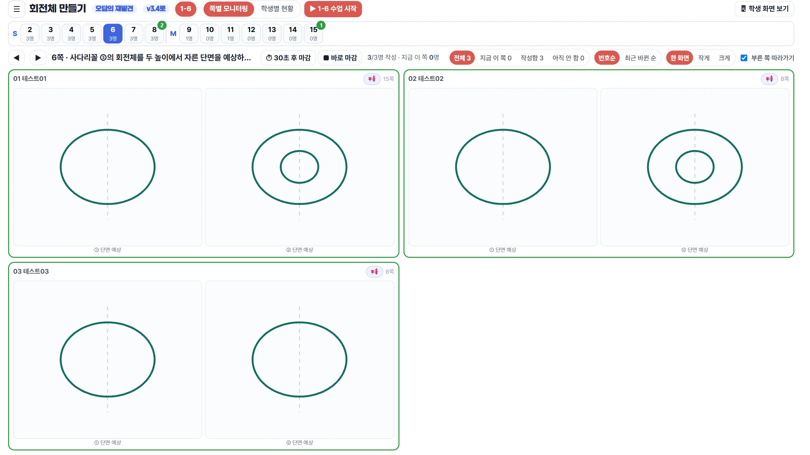
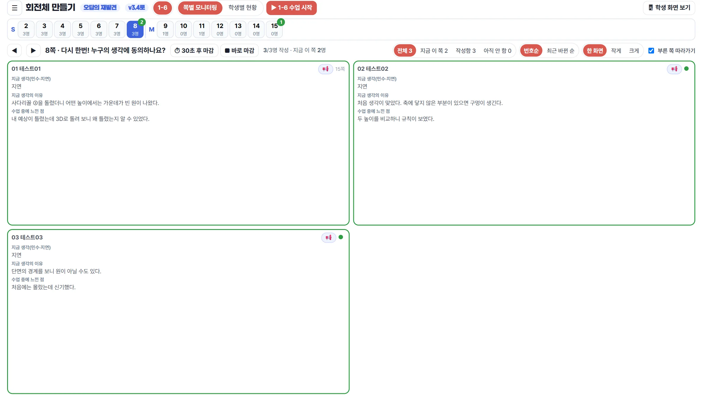
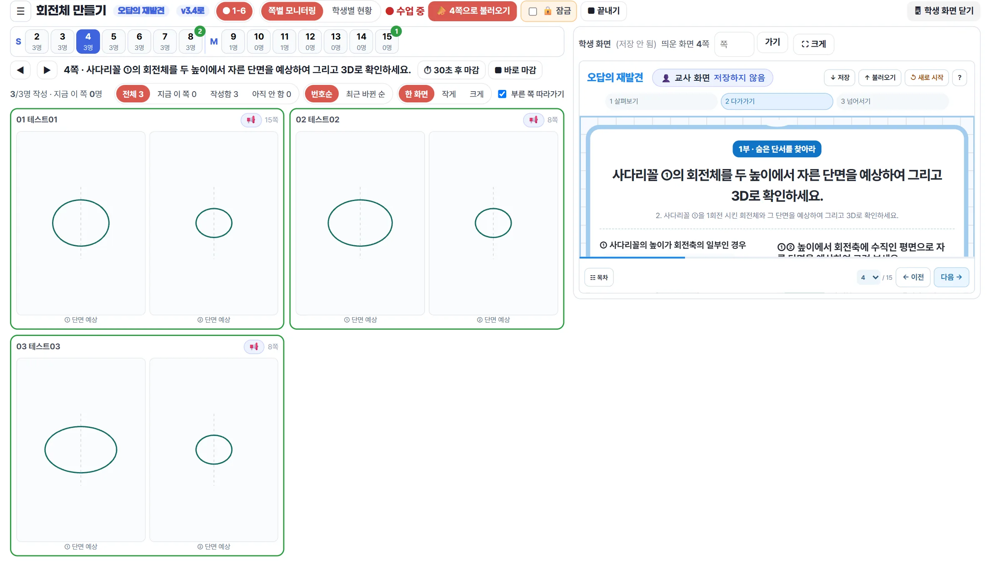
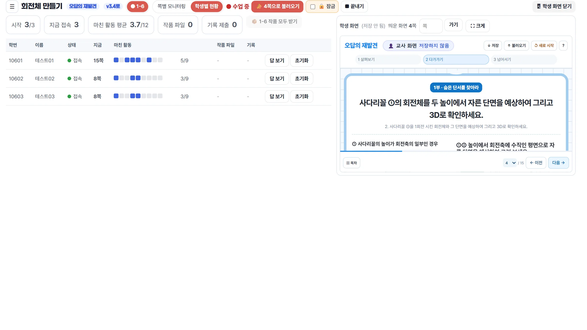
From the platform records of Grade 7 classes 6–10 (151 students), as of 5 Nov 2026. No names or IDs.1학년 6~10반(151명) 앱 기록, 2026. 11. 5. 기준. 이름·학번 없이 집계.
Choices made by the teacher while building the platform with students.학생들과 수업하며 교사가 세운 원칙입니다.
Students never see a "misconception" label. They see how their own thinking changed; diagnosis codes are for the teacher.학생에게 오개념 딱지를 보여 주지 않습니다. 학생은 자기 생각의 변화를, 교사는 진단 결과를 봅니다.
Predictions are locked before the 3D check; AI answers are delayed; the first answer is kept.3D 확인 전에 예상을 잠그고, AI 답은 늦게 공개하며, 처음 답은 남깁니다.
Points come from attendance, quizzes, diaries and lesson steps — a wrong answer earns the same as a right one.포인트는 출석·퀴즈·일기·수업 단계에서. 틀려도 맞아도 같은 점수입니다.
Calling, locking and closing pages keep 30 students together while every answer remains visible.불러오기·잠금·마감으로 30명이 함께 가면서도 모든 답이 보입니다.
Students sketch with their own hands, then use 3D tools to test the sketch.학생이 직접 그려 본 다음 3D 도구로 확인합니다.
School Google accounts, records visible only to the student and teachers, names masked in public galleries.학교 구글 계정, 본인·교사만 보는 기록, 공개 갤러리는 이름 가림.